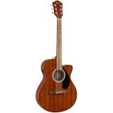
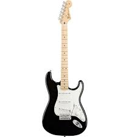
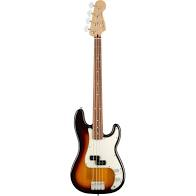
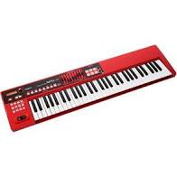

-
Violão Elétrico Fender Concert FA135CE 097 1253 522 Mahogany
Corpo em Mahogany, captação Fishman, nova ponte estilo Viking em Walnut, moderno headstock Fender 3+3 em um braço muito confortável, criando uma rica sonoridade.
R$ 4.599,90
em até 12x sem juros no cartão de crédito
-
Guitarra Stratocaster Standard Fender - Preto (Black)
A Standard Stratocaster é um clássico acessível e elegante com uma combinação do design Fender tradicional com características atuais. Esse é o instrumento ideal para guitarristas de qualquer estilo e de todo e qualquer nível.
R$ 2.969,10
em até 12x sem juros no cartão de crédito
-
Contrabaixo 4c Fender Player Precision Bass Pf 500 - 3 Color Sunburst
Clássico instrumento, dono de uma sonoridade única, sem igual. Extremamente confortável para se tocar, novos trastes, novos captadores Player Series Alnico 5 Split Coil, novas cores e toda a história que somente um Fender Precision Bass carrega!
R$ 7.635,00
em até 12x sem juros no cartão de crédito
-
Teclado Sintetizador Roland XPS10 RD 61 Teclas Vermelho
O XPS10 foi desenvolvido com base na facilidade de uso e com sons indispensáveis para qualquer apresentação musical. Ele contém a melhor seleção de sons essenciais como pianos, cordas, órgãos, metais e synths, e da presença de sons clássicos das bibliotecas da Roland.
R$ 3.699,00
em até 12x sem juros no cartão de crédito